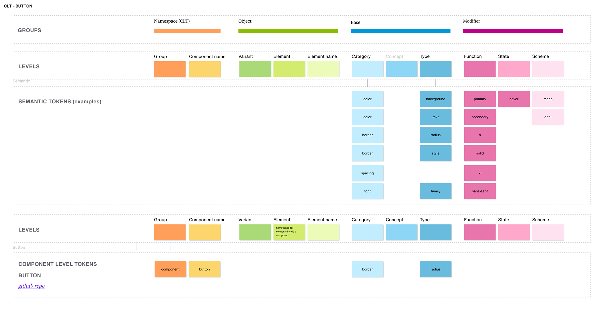
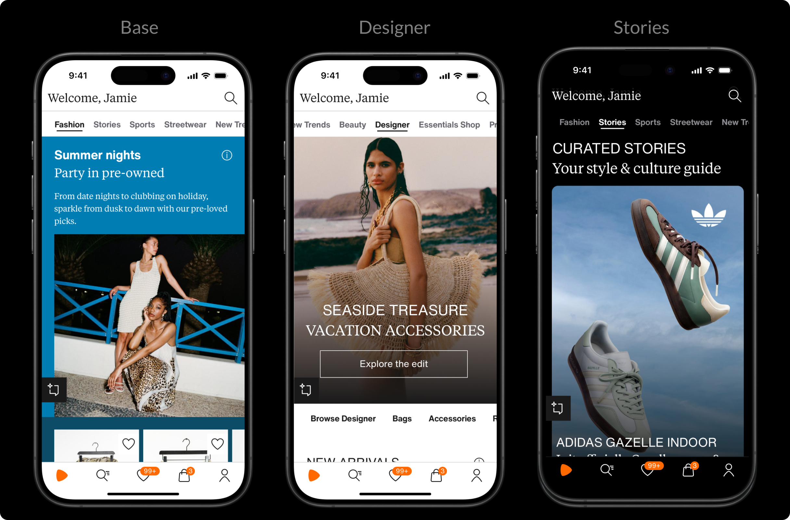
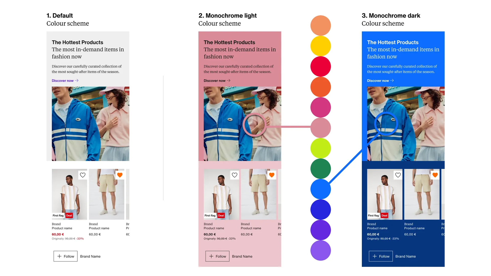
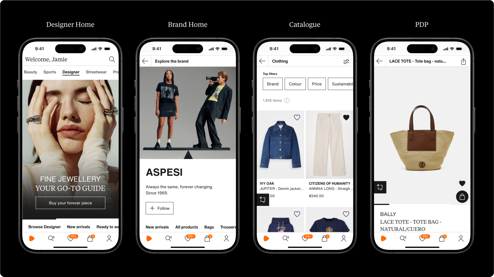
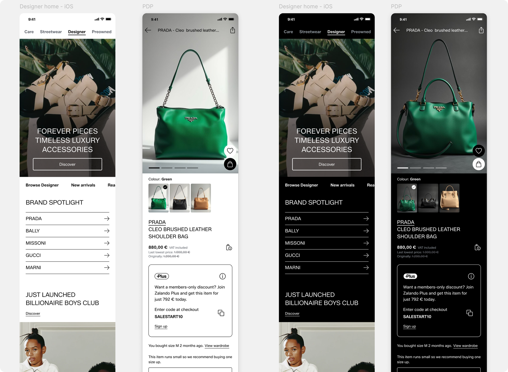
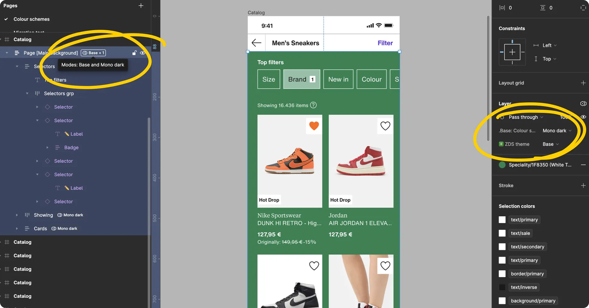
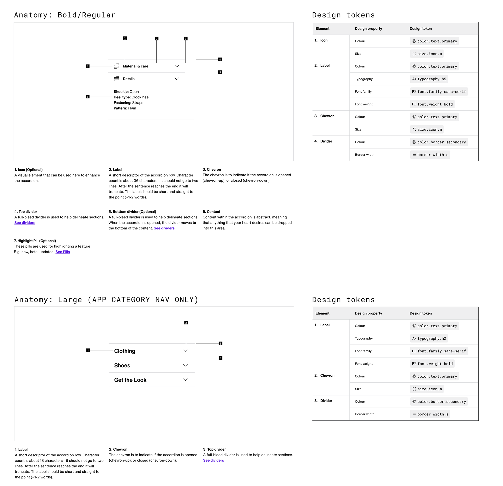

Design tokens and multi theme architecture
From a consistent to a cohesive and configurable visual language
This is a tale about how I introduced flexibility (design tokens and theming) on the Zalando fashion store visual language. Enabled teams to differentiate customer experiences and boost revenue allowing Zalando to explore new markets quickly while removing custom ad-hoc solutions. All this from a central theming architecture running on Web, iOS, Android and Figma.
The challenge
When consistency was no longer enough
Before my time, Zalando had a single visual global language (theme) that was meant to deliver consistent customer experiences across journeys and platforms. And even though this was working fine there was already many teams pushing the boundaries through differentiation to gain customers attention and to present product features as special and tailored experiences. These teams were implementing custom solutions that were almost impossible to maintain and scale due to local overrides and duplications, that at the same time were bloating the app with disjointed experiences and contrasting results.
With the previous technical solution we had the following problems:
Local overrides scattered among projects.
Duplication of components and component variants.
Manual changes across many touch points.
Themes done separately per platform.
Limited only to specific properties, e.g. colours.
Teams ignorance about other solutions.
My role, achievements and outcomes
My work made possible to deliver different experiences through a configurable visual language or what we call themes. I led our design tokens architecture exploration, naming, library set up, design tooling, etc. I helped feature teams to explore and build quick variations of how Zalando may look depending of the user journey or premises presented to customers, like Sports, Zalando Plus, Luxury items (Designer), Beauty or Zalando stories through theming using design tokens. On top of this, once Zalando jumped into a full brand refresh project my work allowed a super fast way to update our colours, font family, typography styles and components from a central place using different Style dictionaries setups enabling multi A/B testing without rewriting the front end.
New Zalando experiences
1 → 4
3 new different CX (themes) were launched in the first 2 years.
Engagement
2x
First new theme double the engagement from customers and brand partners.
New brands onboarded
40+
Designer theme allowed Zalando to add 40 new luxury brands.
My work as design prime consisted in:
- Define design tokens nomenclature, component specs and documentation
- Design semantic and component tokens architecture
- Consolidate theming and colour schemes definitions
- User test tokens nomenclature, structure and theming in Figma
- Translate design tokens as Figma variables and themes as modes in the ZDS Figma libraries
- Communicate to the design community through deep dives and present to lead designers the benefits of using ZDS tokens
- Build Figma tooling to allow migration from colour styles to colour tokens (variables)
- Help external engineering teams to migrate their tiles and compositions to use tokens
Defining the concepts that would guide us
Responsible for:
- Led workshop to define theming principles
- Defined and documented key concepts like design tokens, themes and colour schemes
- Organised semantic and component tokens
Concepts like design tokens and theming can have different meaning depending on the context (system) and people understanding o platform capacities like dark mode. This makes crucial to define these terms as a team to use them consistently in documents, conversations and presentations so teams outside the system team can familiarise with the meaning, usage and benefits. My work consisted on unifying (with the help of my team) documenting and presenting these concepts to the engineering and design community. Some of these definitions are:
ZDS theme definition
- “Is a defined set of changes in our design system visual language – retaining the same functionalities and structure of the design system”
- “Provides a distinctive and tailored look and feel for propositions or premises”
- “Maintains coherency with overall brand identity of Zalando ”
Colour scheme definition
“A colour scheme is a subset of a theme that only affects colours.”
Design tokens definition
- Are fundamental design attributes e.g. spacing, colour, typography etc.
- Captured in a platform-agnostic format
- They help ensure internal and cross-platform consistency
- And are a necessary building block to construct theming
Semantic and Component tokens naming framework
Design tokens applied
Building smarter and flexible themes
Responsible for:
- How theming and overrides would work
- Applied tokens to all of our Figma components
- Setting monochrome and dark mode colour schemes for each theme
- Define the specs for first theme (Designer theme) to be launched
1 set of tokens helped us to build 3 different themes: Base, Designer and Stories.
Base theme, had initially 3 colour schemes. Default, monochrome light and monochrome dark. The last two were meant to work with our Colour snap feature that grab colours from the product images, this way we’ll always ensure the right contrast.
These colour schemes allowed us to make any UI work with any background from the colour snap algorithm.
Designer theme was designed to showcase luxury items and it would only appear on some selected Zalando premises. I was also part of the feature team designing this luxury experience and how this new theme will be express through token as the first new theme.
This the future look of Designer theme once Zalando brand refresh is completed, integrating border radius, the new Zalando Sans font and dark mode.
Stories theme was created to present products through a more editorial POV aiming to bring fashion creators and Gen Z customers through videos and articles. This theme is meant to always work on dark mode by default. My work consisted on aligning how the tokens will change to represent the art direction the feature team was exploring.
How did I connect Figma to production code
Responsible for:
- Setting Figma variables following our design tokens
- Designed themes and modes
- Built a Figma plugin to migrate styles to variables
- Create style dictionary configuration compatible with figma through a Figma plugin
I introduced Zalando’s design community how to make use of design tokens and how to apply theming.
I led design tokens translation to figma variables and created all the overrides for colours, typography, spacing, components, etc.
